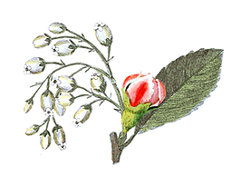

<main>
    <section>
        <article class="top">
            <h4>- ჩვენს შესახებ -</h4>
            <div class="top-img">
                
            </div>
        </article>

        <article class="bottom">
            <aside class="left">
                <h3>ნატა'ლის კოსმეტიკის შექმნის მოკლე ისტორია!</h3>
                <p>სტუდენტობაში ჩემი ჰობი იყო კოსმეტიკის მოხმარებაც და შექმნის ინტერესიც. 32-33 წლის წინ გავაკეთე სახის
                    პირველი საცხი მოყვარულის დონეზე. საგვარეულო რეცეპტის დახმარებით, წიგნებიდან თუ ჟურნალ-გაზეთებიდან
                    მოძიებული რეცეპტებით, დავიწყე ექსპერიმენტები, რაც ძალიან მაინტერესებდა და სიამოვნებას
                    მანიჭებდა 😊 მაშინ არ იშოვებოდა არც მასალები და არც ასეთი ლამაზი და მრავალფეროვანი ჭურჭელი. იყო
                    მხოლოდ ზეითუნის ზეთი, კაკაოს კარაქი და სპერმაცევტი( ვეშაპის ქონი ), 😁 🙈 ოღონდ ნატურალური( ახლა
                    ყველა
                    ხელოვნურია, არავინ მოგატყუოთ ) სამაგიეროდ ახლა ყველაფერი ხელმისაწვდომია, თუ გამოწერით ან ადგილზე
                    შეძენით, მთავარია ხარისხში გარკვევა, რომ არ მოვტყუვდეთ.
                </p>
                <p>ასე გრძელდებოდა წლების განმავლობაში. ხან მიმავიწყდებოდა, ხან ძალიან გადავეშვებოდი ამ სივრცეში.
                    ვაკეთებდი და ვჩუქნიდი ახლობლებს, მეგობრებს
                    და ამით ვიკლავდი გაკეთების და ძიების ჟინს. ოჯახის წევრებს იქეთ ვთხოვდი მოეხმარათ და შეეფასებინათ, არ
                    მენდობოდნენ, ახლა აქეთ მთხოვენ 😁 🙈 კმაყოფილი მეგობრების, დაჟინებით და თხოვნით, სერიოზულად დავიწყე
                    ფიქრი და მუშაობა ჩემი ჰობი საქმედ მექცია.
                    უცხოელ კოსმეტოლოგებთან გავიარე სწავლების რამდენიმე ეტაპი. შევისწავლე ყველა ტიპის და ასაკის კანი და
                    მათი მოვლა. შევქმენი უამრავი კოსმეტიკური რეცეპტი კანის ტიპის, ასაკის და მდგომარეობის
                    გათვალისწინებით, (დღესაც ვაგრძელებ😊) ვტესტავდი ამ რეცეპტებით გაკეთებული სახის და ტანის მოვლის
                    საშუალებებს თვეობით, რაც დიდ თმენას და მასალას მოითხოვდა. იყო უამრავი შეცდომა, გაწბილება,
                    უპასუხისმგებლობა და ტყუილი მომწოდებლებისგან, რაც თავს იჩენდა ნაწარმზეც, მაგრამ არ ვნებდებოდი,ღამეებს
                    ვათენებდი, სხვანაირად შეუძლებელი იყო დამეცვა ტექნოლოგიურად საჭირო მოთხოვნები, ოჯახის პირობებში.
                    ძალიან ვეცადე, მიმეღო მაღალი ხარისხის და ტექსტურის კოსმეტიკა, რომელიც არ ჩამოუვარდებოდა ბევრად
                    ძვირადღირებულ ბრენდებს.</p>
                <p>
                    ამდენი წლის შრომის და გამოცდილების შემდეგ
                    გავბედე, შემექმნა ქართული წარმოების , სახის და ტანის მოვლის საშუალებები და ხელმისაწვდომი გამეხადა
                    ყველა მსურველისთვის .
                    მადლობა ყველა ქალბატონს,ნდობის და მადლიერების გამოხატვისთვის.💗
                    თითოეული თქვენგანის მადლობა ,სტიმულია ჩემი მუშაობისთვის,ამ საპასუხისმგებლო საქმეში.სახე ხომ ქალის
                    სავიზიტო ბარათია?!❤️
                    ნატა'ლის ნაწარმი არის 100 % ნატურალური,(ნუ შეეჭვდებით,ექვემდებარება ნებისმიერ დიაგნოსტიკას).
                </p>
            </aside>
            <aside class="right">
                <h3>ქართული წარმოების ,სახის და ტანის მოვლის, 100%-ით ნატურალური კოსმეტიკა თქვენთვისაა!</h3>
                <p>ენდეთ ქართულს! 💗🇬🇪
                    ხარისხი მაღალი და შედეგზე ორიენტირებული. ფასები მისი შემაგენლობიდან და შედეგიდან, ხელმისაწვდომია.
                    შექმნის დროს დაცულია ყველა წესი, დეზინფექციით დამთავრებული.
                    კოსმეტიკაში მასალად გამოყენებულია მხოლოდ ცივად დაწურვით მიღებული, არარაფინირებული ზეთები და ცხიმები,
                    ევროპული წარმოების მაღალი და დაბალი მოლეკულური, ჰიალურონის მჟავეები, ასევე უამრავი სახის მჟავეები,
                    უამრავი ვიტამინი, კანის საჭიროების მიხედვით, კოლაგენი, პეპტიდები, ნატურალური ექსტრაქტები, ეთერზეთები
                    და სხვა.
                </p>
                <p>
                    შეგირჩევთ ასაკის, კანის ტიპის და მდგომარეობის მიხედვით.
                    Nata'li-ნატა'ლი კოსმეტიკა დამზადებულია უმაღლესი ხარისხის, მხოლოდ ნატურალური ნედლეულით.
                    სისტემატიური მოხმარებისას შედეგი გარანტირებულია. კონსულტაცია (სურვილის შემთხვევაში) კანის მოვლის
                    შესახებ, შეგიძლიათ მიიღოთ უფასოდ ,ნებისმიერ დროს.
                    პატივისცემით და სიყვარულით ნატალი 💖.
                </p>
                <div class="bottom-img">
                    
                </div>
            </aside>
        </article>
    </section>
</main>